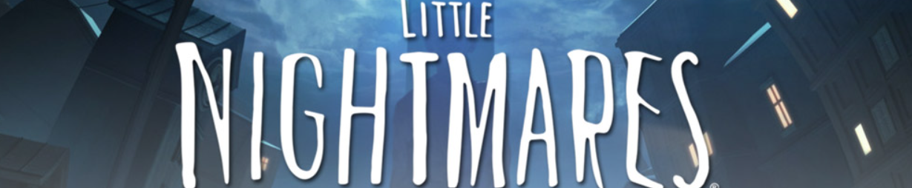
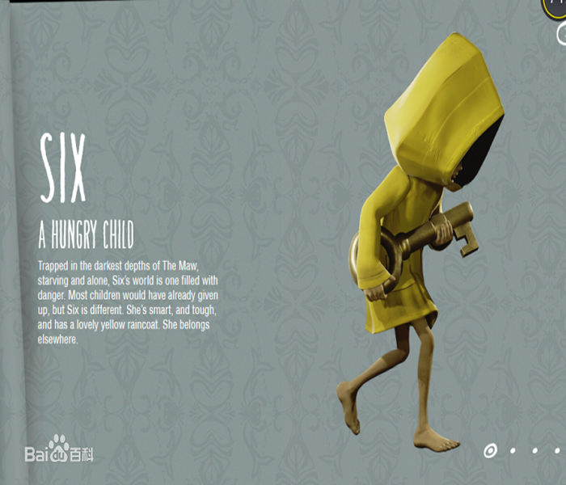
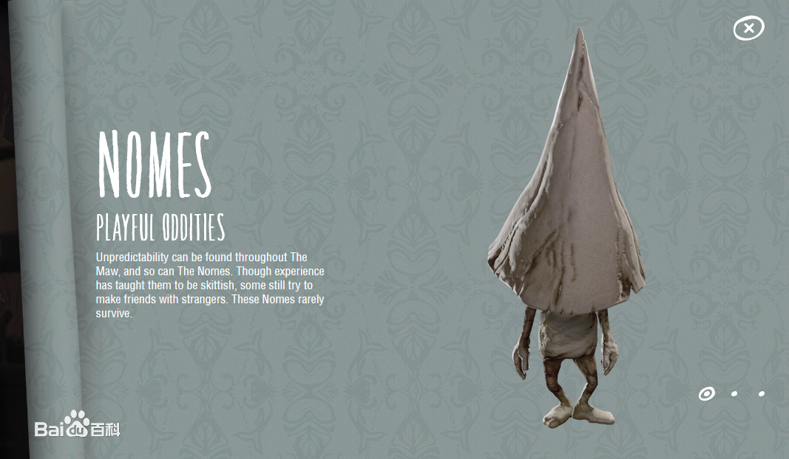
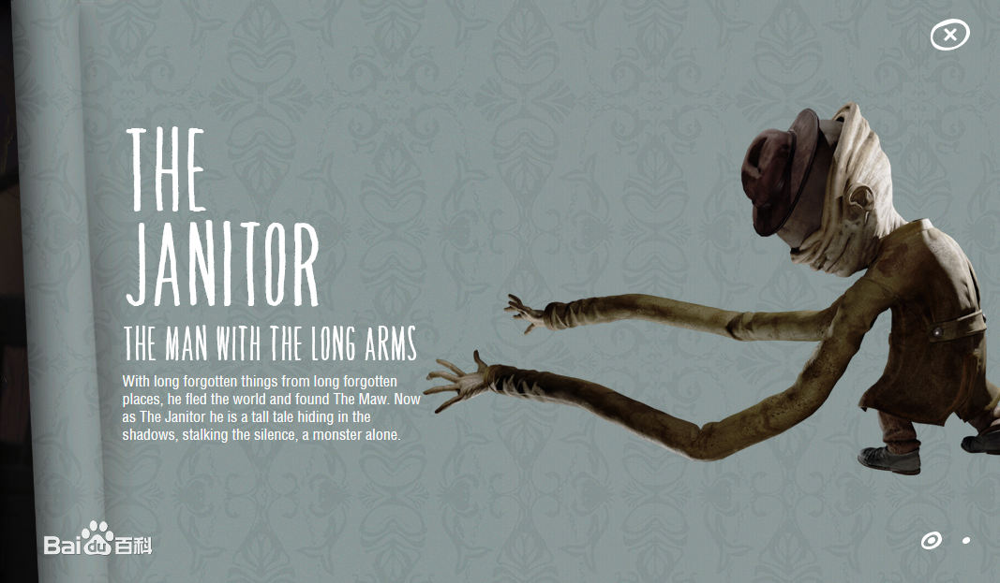

当前日期：2022-10-12 22:40
首页
游戏简介
故事背景
剧情设定
场景地图
角色设定
注册
通关攻略

小六
一个饥饿的小孩。六饥饿而孤独的被困在胃（原文为Maw）里。六的世界充满危险。大多数孩子已经放弃，但是六是不同的。她是聪明的，坚强的，还有一件可爱的黄雨衣。她属于别的地方。

逃跑的孩子
根据官方“《小小梦魇完全版》的首个预告片”，被称为“the runaway kid”,逃跑的孩子，根据剧情他在逃生过程中用通电的电视机电死了水鬼，见到了“the lady”（夫人），夫人面具下的样子之后被变成了“Nomes”（诺姆），也就是锥形的小人，最后在递给六香肠时被六吃掉了

小黑人
主角第一次饥饿时将自己的面包给主角的人，被关在笼子里的人，在主角被捉住后看到被做成“肉”的人，这些人的形象都是小黑人形象，他们都是失去了自由的人。小黑人将面包给主角让主角意识到了食物的重要性，目睹小黑人被做成肉让主角意识到“大人”的残酷，人类形状的肉映射着现实中被大人物以利益(肉)的名义无情扼杀的不听话的小人物，在梦里是给主角带来存活希望的人，也是让主角陷入噩梦的绝望。